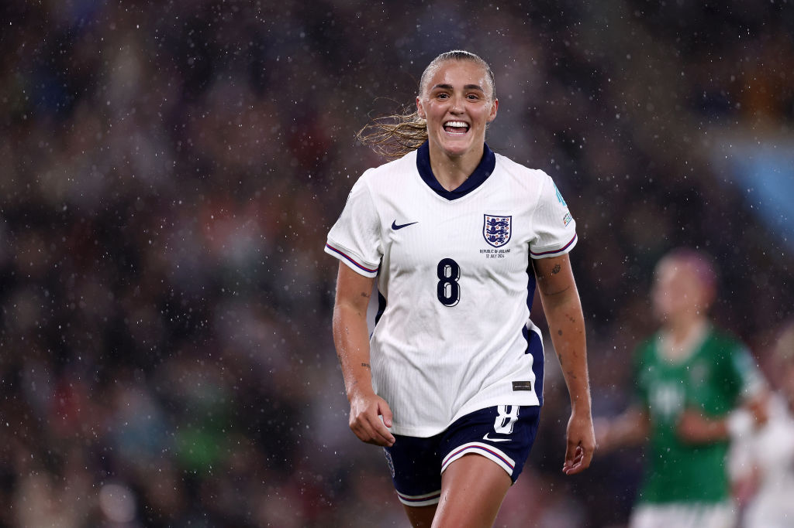
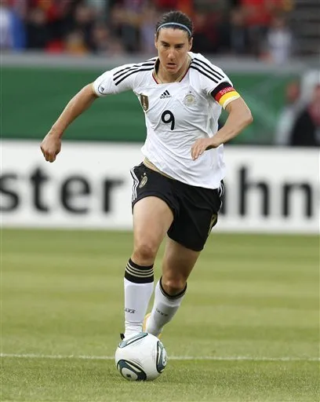
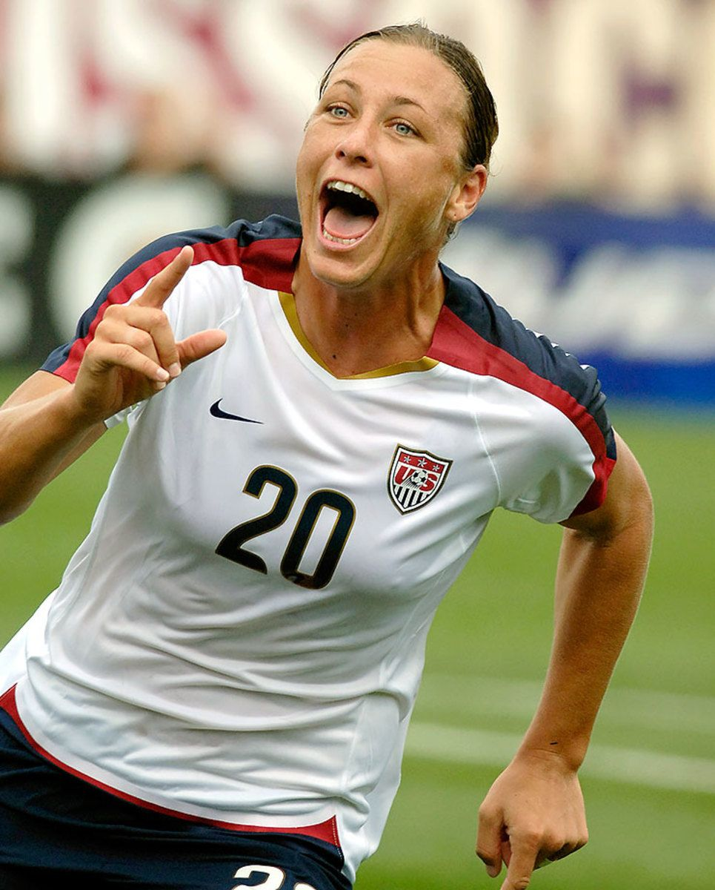

From Banned to Global — The Data Story of Women's Football
In 1921, England banned women from football. In 2023, 2 billion watched the World Cup. This is everything that happened in between — told through 11,177 matches, 2,795 goals, and 70 years of data.


When Football
Was Forbidden
December 1921. England's FA declared women's football "quite unsuitable for females." The ban lasted 50 years. What happened next surprised everyone.
England's FA bans women from affiliated grounds, calling football "quite unsuitable for females." Germany follows.
Italy hosts an unofficial women's World Cup. Denmark win. FIFA refuses to sanction it.
After 50 years of resistance, England reverses the ban. Germany had lifted it the year before.
12 nations. Guangzhou, China. The USA win. Prize money: $0.
90,185 fans fill the Rose Bowl for the USA vs China final. A world record for women's sport.
32 nations. 2 billion viewers. $110M prize money. 1.98M in attendance.
Fifty years is a long time to wait. What moves me most in this data is not the ban itself — it's what happened after it lifted. The chart just keeps climbing.
The Race for Dominance
Watch the top 15 nations accumulate wins from 1956 to 2025. Press play to witness seven decades of shifting power — Germany's early supremacy, America's total dominance, and the rising challengers.
Germany pioneered. The USA dominated from 1985. But by 2023, Japan, Sweden and Australia are closing in — the bars tell the whole story.
The World Wakes Up
Watch 238 nations light up across 70 years. Every country that entered women's international football — including 27 historical and non-FIFA regional entities that played real recorded matches.
The 1991 World Cup was a trigger. Before it: a handful of European nations. After it: a cascade across every continent within a decade.
The Web of Rivalries
Every arc represents matches played between the world's top 10 nations. Arc thickness encodes victories. Hover any arc or node to isolate a rivalry.
USA vs Germany: 16 wins to 2. But those German victories came in crucial moments — the chord diagram shows where power concentrated and where cracks appeared.
Shifting Power
Six confederations, seven decades. This streamgraph shows the rising and falling tides of continental dominance — measured in victories per year.
Europe built the foundations. North & Central America seized control. Asia is growing fast. The game didn't just expand geographically — it redistributed power entirely.
The Price of Equality
For 24 years — four World Cups — women played for zero dollars. The men's prize pot grew from $110M to $1 billion in the same period.
$0 for 24 years. The 1999 Rose Bowl drew 90,185 people. The fans were never the problem. The investment just needed to catch up.
The Legends
Over 2,795 recorded goals from 1,055 unique scorers. Each circle is a player — size reflects goals. Hover to reveal their story.
Scorers
Top Career
Best Player
with data


Birgit Prinz scored those 34 goals without prize money, without prime-time TV. What we know for certain is these women played for the love of the game.
When Goals Happen
Patterns hidden in 2,795 goals. The radial clock shows every 5-minute window — the 45th and 85th minutes spike universally, identical to men's football.
Goals cluster at the 45th and 85th minutes — identical to men's football. Match pressure dynamics are universal. The biology of competition doesn't change with gender.
Win Rate vs. Experience
Each bubble is a nation — size reflects total goals scored, colour reflects confederation. Teams in the top-right quadrant combine high win rates with long history. Hover any bubble to explore.
Europe built the foundations. The USA dominated for three decades. But Japan won 2011, Nigeria leads Africa, and Australia co-hosted 2023. The next generation hasn't been born yet.
Head-to-Head Explorer
Pick two nations. The radar chart normalises five dimensions against all teams so you see relative strength. Every number invites more questions than it answers.
USA vs Germany: 16 wins to 2. While the USA dominates in raw numbers, Germany's win rate and goals per match tell a different story about efficiency.